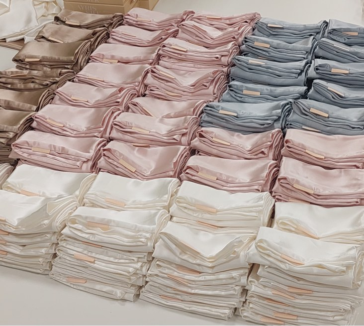
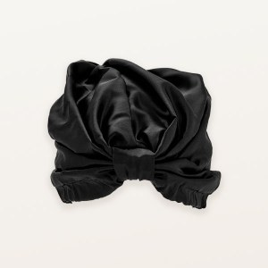
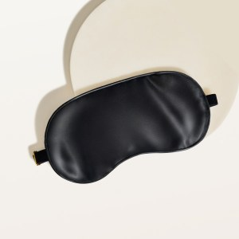
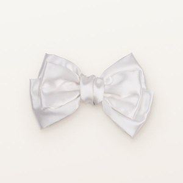
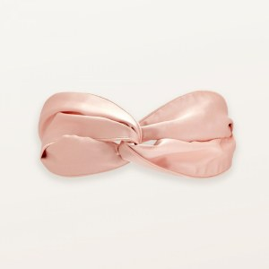
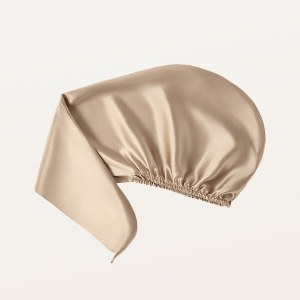
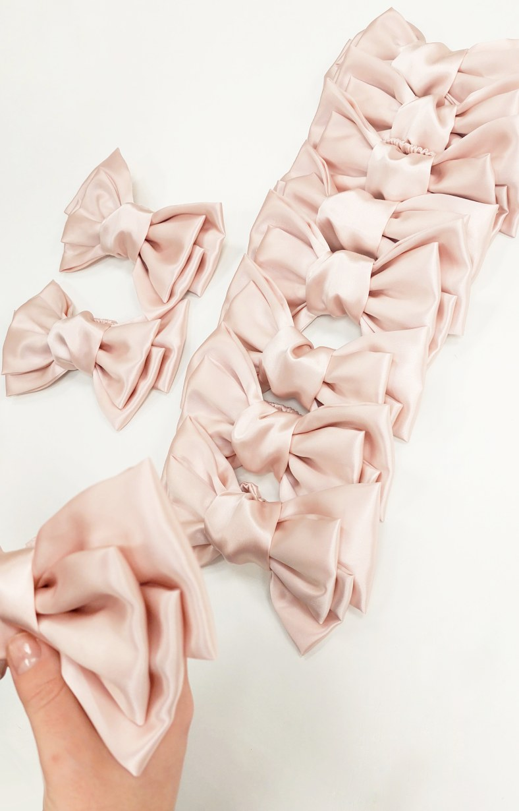

Это проект, где ключевым фактором становится материал. Работа с натуральным шелком требует другой точности: любые дефекты сразу заметны, а требования к качеству выше, чем в большинстве категорий.
Мы полностью разработали и запустили в производство линейку шелковых аксессуаров, после чего стабильно давали ежемесячный выпуск на протяжении двух лет до перехода бренда на иностранное производство.



Линейка включала аксессуары — от масок для сна до полотенец-тюрбанов, и каждый из них проходил строгий контроль. Важно было не просто обеспечить внешний вид, а гарантировать, что изделие дойдет до клиента без потери качества — без зацепок, деформаций и дефектов.





Проект строился как полный цикл: от концепции до стабильного производства. Это пример работы, где внимание к деталям определяет результат, а качество — не декларация, а обязательное условие на каждом этапе.